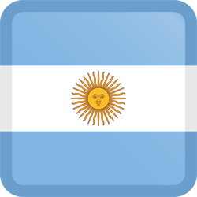

<nav class="navbar navbar-expand-lg">
    <div class="container-fluid">
        <a class="navbar-brand" href="#">
            
            Sitios Turísticos de Argentina
        </a>
        <button class="navbar-toggler" type="button" data-bs-toggle="collapse" data-bs-target="#navbarText" aria-controls="navbarText" aria-expanded="false" aria-label="Toggle navigation">
            <span class="navbar-toggler-icon"></span>
        </button>
        <div class="collapse navbar-collapse" id="navbarText">
            <ul class="navbar-nav me-auto mb-2 mb-lg-0">
            </ul>
            <span class="navbar-text">
                Creado por {{author}}
            </span>
        </div>
    </div>
</nav>